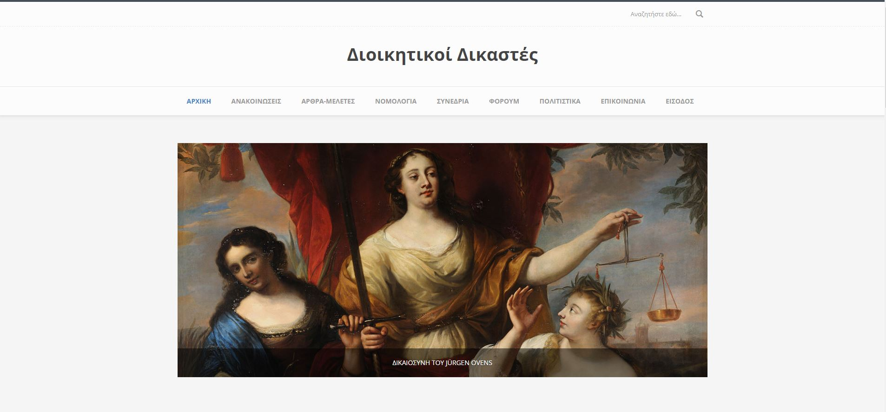

Για καθημερινή ενημέρωση σχετικά με νομοθεσία, νομολογία κι άλλα νέα που αφορούν τα τακτικά διοικητικά δικαστήρια, επισκεφθείτε την ιστοσελίδα μας

Πληροφοριες
Το πρόγραμμα αυτό είναι μια ερασιτεχνική προσπάθεια υπολογισμού των προθεσμιών, προσαρμοσμένο στις ανάγκες των Διοικητικών Δικαστών.
Οι δικαστικές διακοπές υπολογίζονται για την προθεσμία σε ημέρες. Οι μήνες και τα έτη προστίθενται μετά.
Υπολογίζονται και τα δίσεκτα έτη και οι σταθερές γιορτές του έτους.
Δημιουργείται μια λίστα με τις ημέρες της προθεσμίας για επαλήθευση από τον χρήστη. Υπενθυμίζουμε ότι η ευθύνη για το σωστό υπολογισμό των προθεσμιών ανήκει στον χρήστη.
Στείλτε μας σχόλια για τυχόν προβλήματα ή ιδέες στο φμπ για να το βελτιώσουμε